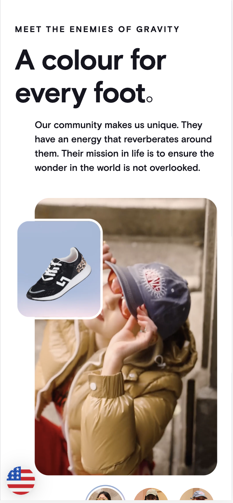

White Space and Clean Design
ls Graphics
ls Graphics red mi note 11 pro presentationI chose this website as an example of White Space because you can clearly see that all that space has intentionally been placed there to highlight the presence of the phone.
Hick's Law
HK Living
HKLiving.comI chose this website as an example of Hick's Law because it has only one button (the arrow) the more decisions available the more complex this website understands it.
Visual Hierarchy
Rollie Nation
rollienation.com I chose this website because the content has clearly differentiated the levels of importance with the size of the font and the image that is over the video.